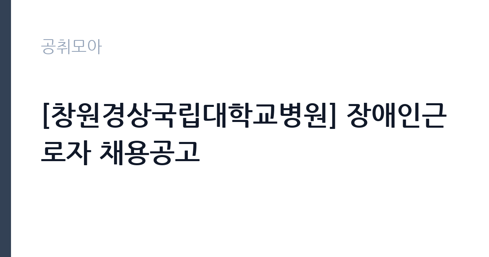

[공공기관] [창원경상국립대학교병원] 장애인근로자 채용공고
경상국립대학교병원 · 경남 · 마감 2026-11-04 (D-6) · 출처 잡알리오

한눈에 보는 모집 조건
| 기관 | 경상국립대학교병원 |
|---|---|
| 공고명 | [창원경상국립대학교병원] 장애인근로자 채용공고 |
| 고용형태 | 정규직 |
| 근무지 | 경남 |
| 게시일 | 2026-10-29 |
| 마감일 | 2026-11-04 (D-6) |
지원자격, 이렇게 읽으세요
- 본원 계약직근무자규정 제6조 제1항 제1호에 따른 결격사유에 해당되지 않는 자
정규직 채용은 기간의 정함이 없는 근로계약을 전제로 합니다. 수습 기간을 두고 평가한 뒤 정규직으로 확정하는 절차가 일반적이며 기관의 인사 규정과 임금 체계를 적용받습니다. 이번 공고는 경상국립대학교병원이 직접 진행하는 자체 전형입니다. 이 전형은 장애인복지법에 따른 등록장애인이나 국가유공자 상이등급 판정자로서 한국장애인고용공단의 추천을 받은 사람만 지원할 수 있습니다. 추천 절차를 거치지 않으면 서류 단계에서 반려되므로 접수 전에 공단 추천 일정을 먼저 확인해야 합니다. 연령 기준과 병역 요건, 병원 인사규정상 결격사유도 함께 적용됩니다. 채용 형태와 근무 부서는 공고문에 명시되므로 계약 기간과 배치 부서를 함께 확인하십시오. 응시 자격 판단이 애매하면 접수 전에 채용 담당 부서로 문의하는 편이 안전합니다. 공고문의 응시자격 표를 보면 자격 항목이 여러 줄로 나뉘어 있으므로, 각 줄을 하나씩 체크하며 본인 해당 여부를 표시해 두면 누락을 줄일 수 있습니다. 학력이나 전공 요건이 없는 공고라도 제출서류 목록은 그대로 적용되므로 서류 준비 부담은 줄지 않습니다.
이 공고의 포인트
이 건은 경상국립대학교병원이 같은 시기에 낸 5개 모집분야 가운데 장애인 제한경쟁(진료지원) 직무입니다. 다른 직무 공고와 요건이 다르므로 지원 전에 모집분야 표를 대조해야 합니다. 이 공고의 첫 번째 포인트는 고용 형태입니다. 수습 기간 평가를 통과하면 기간의 정함이 없는 신분이 되어 고용이 안정됩니다. 두 번째는 업무 범위가 명확하다는 점입니다. 장애인 제한경쟁(진료지원) 직무로 채용되므로 배치 이후 담당 업무가 크게 흔들리지 않습니다. 세 번째는 근무지입니다. 경남 지역 근무로 수도권 공고에 비해 지원자 분포가 넓지 않아 상대적으로 경쟁이 분산되는 경우가 있습니다. 같은 기관의 다른 공고와 접수 기간이 겹치므로 중복 지원 가능 여부를 확인해야 합니다. 같은 직무 공고 중에서는 접수 마감이 가장 빨라 일정을 앞당겨 잡아야 합니다. 선발 인원은 공고문에 명시되어 있으니 모집분야 항목을 함께 확인하십시오.
전형은 어떻게 진행되나
전형은 서류심사와 면접심사를 기본으로 하고 직무에 따라 필기나 실기, 체력검정이 추가됩니다. 서류 단계에서는 응시자격 충족 여부와 제출서류 형식을 확인하며 이 단계에서 탈락하는 지원자가 적지 않습니다. 면접은 직무 이해도와 경험을 확인하는 방식으로 진행되고 발표는 개별 통보나 홈페이지 게시로 이뤄집니다. 최종합격 이후에는 결격사유 조회와 채용 신체검사가 이어지며 이 절차에서 문제가 확인되면 합격이 취소될 수 있습니다. 구체적인 전형 단계와 배점은 공고문에 표로 정리되어 있으니 원문을 기준으로 준비하십시오. 자격증 취득 예정자로 지원했다면 취득 증명 제출 기한을 반드시 지켜야 합니다.
원문에서 확인한 전형 방식
1. 환자 및 내원객 안내, 병원 내외 환경 정리, 병원 내 주차관리 업무 보조, 환자·물품이송, 린넨류 관리 등 진료지원 보조업무 가능자 2. 장애인복지법에 의한 등록장애인 또는 국가 유공자 등 예우 및 지원에 관한 법률에 의한 상이등급으로 판정된 자로서 한국장애인고용공단이 추천한 자 3. 입사지원서 접수 마감일 현재 만18세 이상이면서 60세 미만인 자 4. 남자인 경우, 입사지원서 접수 마감일 현재 병역을 마쳤거나 면제된 자 5. 본원 계약직근무자규정 제6조 제1항 제1호에 따른 결격사유에 해당되지 않는 자
이런 분께 추천해요
- 장애인고용공단 추천을 받은 등록장애인 또는 상이등급 판정자
- 병원 환경에서 안내·이송 업무를 수행할 수 있는 분
- 교대 근무와 장기 근무가 가능한 분
지원 전 체크리스트
- 응시자격 요건과 경력 기준을 충족하는가 — 경력은 증명서로 입증해야 합니다
- 수습 기간과 정규직 전환 조건을 확인했는가
- 제출서류 목록을 모두 준비했는가 — 누락 시 서류 단계에서 탈락합니다
- 접수 마감 2026-11-04 이전에 접수 방식을 확인해 제출했는가
모집 일정과 제출 타이밍
2026-10-29에 공고가 올라왔고 접수는 2026-11-04까지입니다. 남은 기간은 6일이며, 이 기간에 자격증 사본과 경력증명서, 주민등록등본 같은 기본 서류를 모두 준비해야 합니다. 경력증명서는 발급에 며칠이 걸리는 경우가 있으니 가장 먼저 신청하십시오. 접수는 온라인과 우편·방문으로 나뉘는 경우가 많고, 우편 접수는 도착 기준으로 판정되므로 마감일 소인만 믿으면 안 됩니다. 면접 일정은 서류 발표 후 개별 통보되므로 제출 후에도 연락을 받을 수 있도록 유지해야 합니다. 서류 발표일과 면접일 사이가 짧은 경우가 많아 면접 준비는 접수와 동시에 시작하는 편이 좋습니다.
직무 이해하기: 공공기관
국립병원은 정신건강·결핵·재활 등 공공 의료를 담당하는 국가 기관입니다. 진료와 함께 입원 환자 보호, 지역 사회 연계 사업을 운영하며, 공무직 인력은 시설 관리와 급식, 경비 같은 지원 업무를 맡습니다. 보안과 개인정보 보호 요건이 일반 시설보다 엄격합니다. 장애인 제한경쟁으로 채용되는 진료지원 업무는 환자와 내원객 안내, 병원 내외 환경 정리, 주차 관리 보조, 환자·물품 이송, 린넨류 관리 등을 맡습니다. 진료가 원활히 돌아가도록 현장에서 사람과 물건의 흐름을 정리하는 일입니다. 부서에 따라 외래 대기 안내나 검사실 이송처럼 환자를 직접 응대하는 업무 비중이 달라집니다. 교대 근무와 당직이 포함될 수 있고, 병원 특성상 위생과 안전 수칙을 지켜야 합니다. 이 직무는 담당 구역이 정해져 있어 근무지에 따라 실제 업무 환경이 달라집니다. 업무 매뉴얼과 지침이 문서로 정리되어 있어 절차를 익히면 반복 업무는 빠르게 손에 붙습니다.
자기소개서 작성 팁
지원서는 맡을 수 있는 업무와 경험을 구체적으로 쓰는 것이 핵심입니다. 이전 직장이나 봉사 활동에서 했던 안내·정리·이송 업무를 적고, 근무 시간과 체력 조건을 솔직하게 밝히십시오. 병원이나 공공시설 근무 경험이 있다면 위생·안전 수칙을 지킨 사례로 연결하십시오. 장기 근무 의사를 한 문단으로 정리하면 담당자가 배치를 판단하기 쉬워집니다. 구성은 지원 동기, 직무 경험, 기여 방안 순서가 무난합니다. 지원 동기는 경상국립대학교병원의 사업 중 본인이 관심을 가진 부분을 한 가지로 좁혀 서술하고 추상적인 표현은 줄이십시오. 직무 경험은 담당했던 업무와 규모, 결과를 수치로 제시하면 설득력이 올라갑니다. 기여 방안은 입사 후 첫 3개월과 1년 계획으로 나눠 쓰면 준비도가 드러납니다.
면접 준비 포인트
면접에서는 근무 가능한 업무 범위와 배치 부서를 함께 확인합니다. 지원한 업무 중 어떤 부분이 본인에게 적합한지, 함께 일하는 동료와 어떻게 협력할지 묻습니다. 필요한 편의 제공이나 근무 환경 조정에 대해 솔직하게 논의하는 것이 좋습니다. 장기 근무 의사와 출퇴근 가능성을 분명히 밝히십시오. 면접은 공고문에 적힌 직무 내용을 얼마나 이해하고 있는지 확인하는 질문으로 시작하는 경우가 많으니, 모집분야 문구를 그대로 읽어 두는 것이 도움이 됩니다. 지원 기관의 최근 사업이나 조직 개편 내용을 확인해 두면 지원 동기 질문에서 차이가 납니다.
급여·근무조건 읽는 법
알리오(공공기관 경영정보 공개시스템) 2025년 결산 경영공시 기준으로 경상국립대학교병원 일반정규직 1인당 평균보수액은 6,912만원, 공시된 신입사원 초임은 4,068만원입니다. 평균보수액은 기본급에 고정수당·실적수당·성과상여금·급여성 복리후생비를 모두 합산한 값이라 월 기본급만 보고 판단하면 실제와 크게 어긋납니다. 정규직 신입의 경우 공시된 신입사원 초임이 출발점이 되고, 이후 호봉과 성과급에 따라 평균보수에 접근합니다. 장애인 제한경쟁으로 채용되는 근로자의 보수는 병원의 계약직 또는 무기계약직 임금 기준을 따릅니다. 계약 기간과 근무 시간, 수당 항목이 공고문에 제시되므로 월 보수와 총 근무 기간을 함께 확인해야 합니다. 채용 형태에 따라 정년까지 근무가 가능한지가 달라지므로 이 점을 먼저 확인하십시오. 2026년 적용 최저임금은 시급 10,320원, 월 환산 2,156,880원(주 40시간·209시간 기준)입니다. 고용노동부 고시 제2025-47호로 확정된 금액입니다. 공고문에 금액이 제시되지 않은 항목은 원문 보수표나 처우 설명에서 확인해야 하며 확인되지 않은 수치는 쓰지 않는 것이 원칙입니다. 비교할 때는 월 급여뿐 아니라 상여·명절휴가비·복지포인트·초과근무수당까지 포함한 연간 총액으로 계산하십시오. 기간제라면 계약 기간 동안의 총액을, 무기계약이라면 호봉 상승과 정년까지의 누적 소득을 기준으로 판단하는 편이 정확합니다.
자주 묻는 질문
- 선발 인원은 몇 명인가요?
공고문의 모집분야 항목에 직종별 인원이 표로 제시되어 있습니다. 첨부된 공고문 원문에서 확인하십시오. - 근무지는 어디인가요?
경남 지역의 경상국립대학교병원 소속 근무지입니다. 세부 주소와 출퇴근 조건은 원문 공고문에서 확인할 수 있습니다. - 보수는 얼마인가요?
채용 신분(정규직)과 기관 임금 규정에 따라 정해지며 구체적인 금액은 공고문 처우 항목에 제시됩니다. 금액이 공개되지 않은 경우에는 원문의 보수표를 확인하십시오.
함께 보면 좋은 공고
[공공기관] 2026년 (재)한국에너지재단 제2차 기간제 채용 공고(채용 제2026-06호) — 마감 2026-11-13[공공기관] 한국고전번역원 2026년 4분기 제2차 직원 신규 채용 — 마감 2026-11-05[공공기관] 계약직 연구원/행정(전북응급의료지원센터) 채용 재공고 — 마감 2026-11-09출처: 잡알리오 공개정보를 바탕으로 공취모아가 정리한 안내글입니다. 모집 조건·일정은 변경될 수 있으니 지원 전 반드시 원문 공고문을 확인하세요. 본 글은 정보 제공용이며 합격을 보장하지 않습니다.